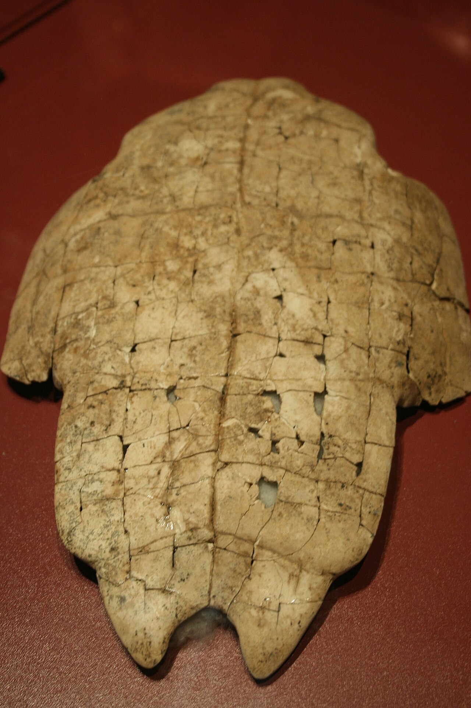
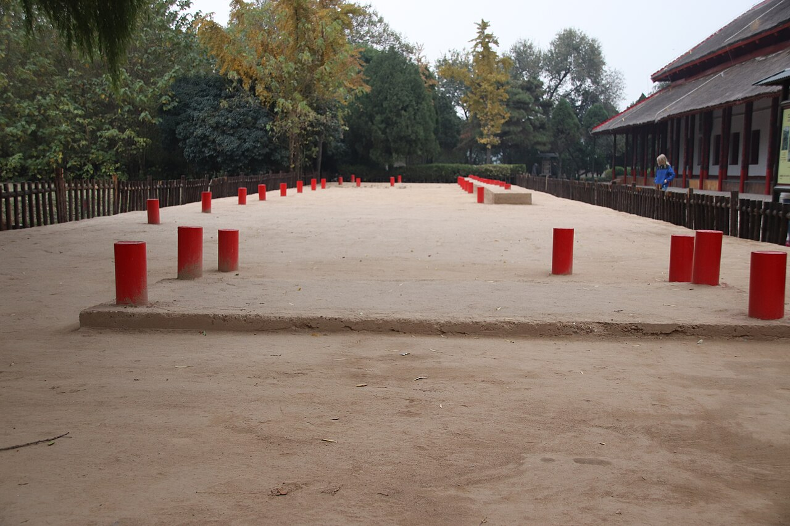
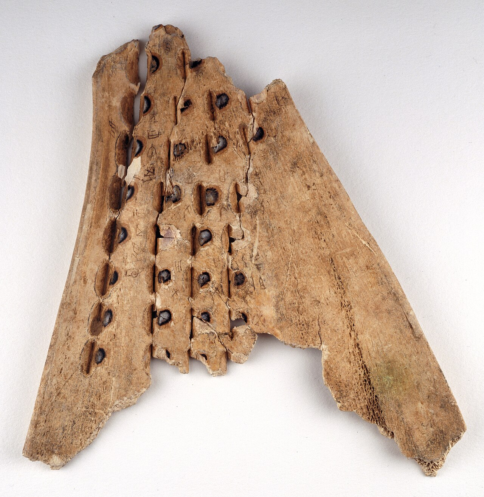
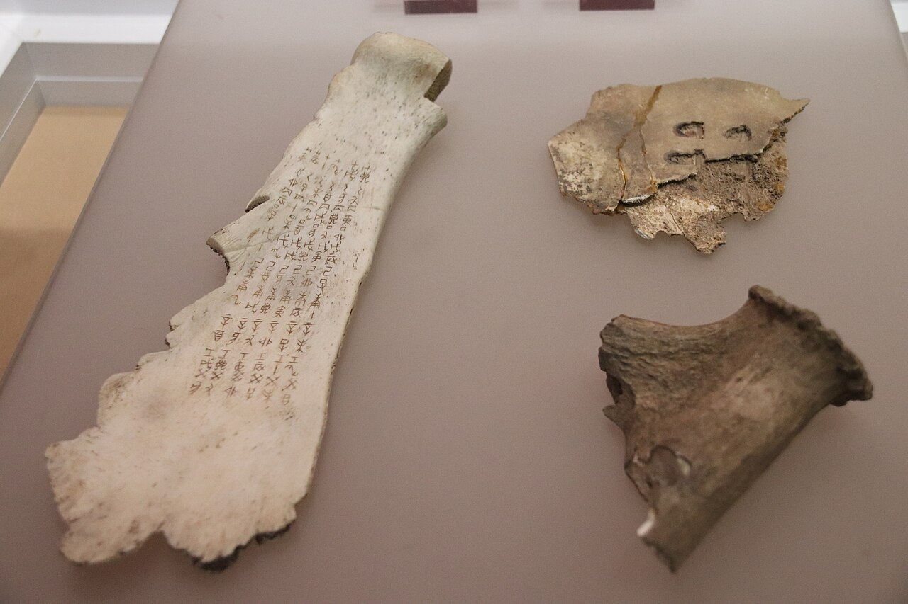
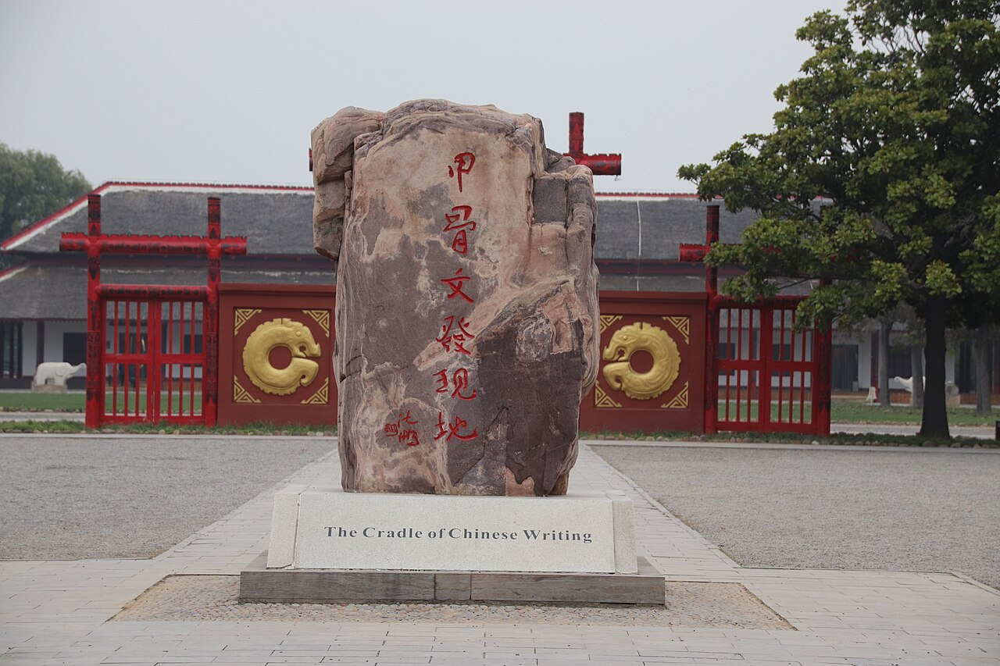
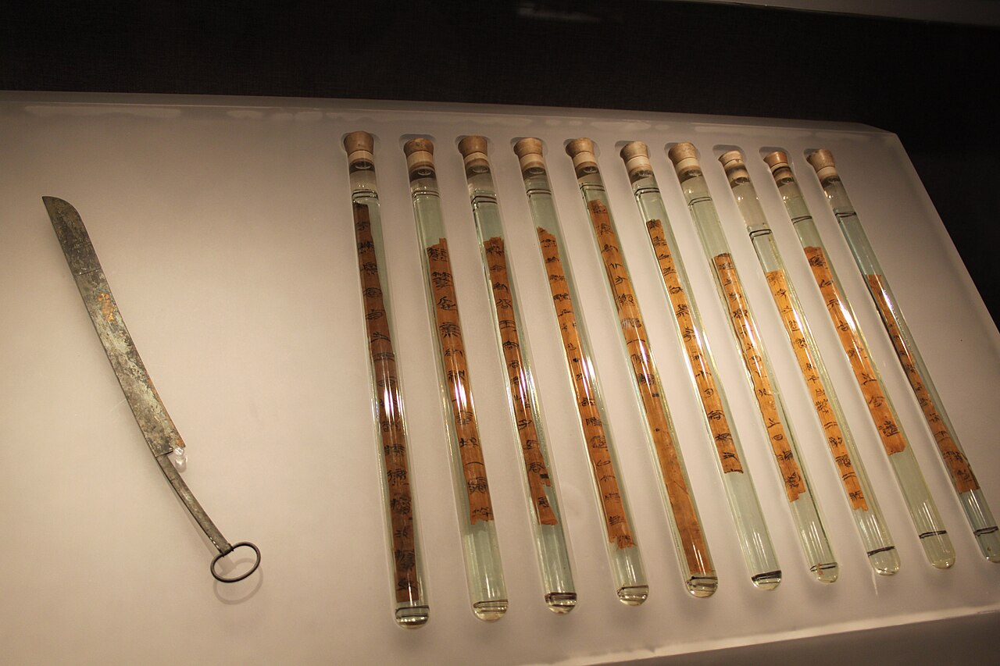
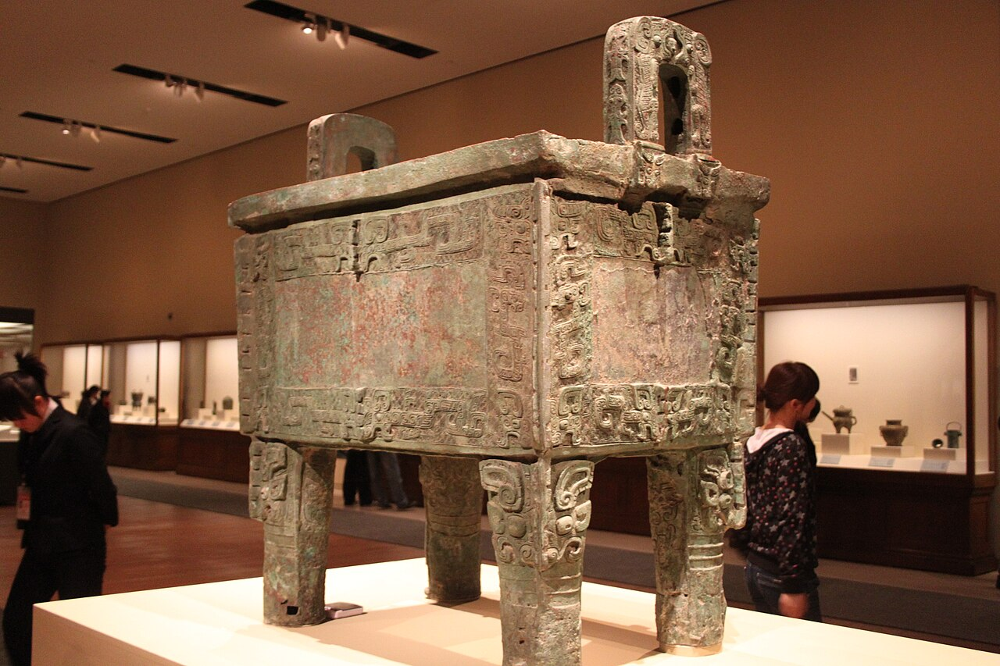
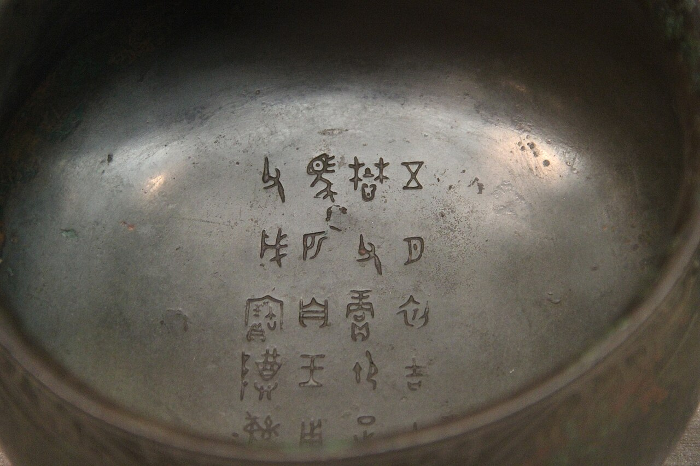

歴史・地理 History & Geography漢字は、 占いから 生まれた？ いま知られている最も古いまとまった漢字は、王が亀の甲羅や牛の骨を焼いて占った記録に残っています。ところがその字は、生まれたてどころか、すでに完成した文字でした。占いの手順と、3,000年かけた字の形の移り変わりを図で見ながら、漢字の生まれをたどってみませんか。
2026.11.09 UP 約8分で読める 文：SOMOSOMO編集部
写真：Shang Tortoise Plastron Oracle Bone／Gary Todd（2008年、CC0）
Previously
前回は、エジプトの王の国が約3,000年続いた話でした。毎年ほぼ同じころに来るナイルの洪水と、まわりの砂漠に守られ、神とされた王と、文字をあやつる書記のしくみが、王家が代わっても引き継がれました。外から来た王たちもファラオの姿をとり、国は前30年にローマの州となるまで続きました。
黄河の北、いまの中国・河南省の安陽（あんよう）。前1200年ごろ、ここにあった都で、王が歯の痛みに悩んでいました。占い師は亀の甲羅や牛の骨に熱を当ててひびを入れ、祖先にうかがいを立てます。歯が痛むのは、おじにあたる昔の王のしわざなのか。犬と羊をささげれば、治してくれるのか。
甲骨の記録から研究者が復元した場面です。問いと答えは、ひびの入った甲羅や骨に刻まれました。「甲骨文字」と呼ばれるこの文字が、いま知られている最も古い、まとまった漢字 です。メソポタミアの文字は帳簿から育ちましたが、中国の文字は占いの記録として姿を現します。漢字は、占いから生まれたのでしょうか。
In a word
最古の漢字が占いの記録なのは、朽ちない骨 に刻まれて残った からだ。
01
Bones and Fire
王は、 甲羅のひびに 国のことを 尋ねた
この都を治めていたのは、殷（いん）という王朝です。自分たちでは「商（しょう）」と名乗り、前1600年ごろから前1046年ごろまで、黄河の中流域を治めました。後半の約200年の都の跡は、いま「殷墟（いんきょ）」と呼ばれ、2006年に世界遺産になっています。

殷の宮殿の跡 殷墟に残る宮殿の土台の跡です。平らにならした広い地面です。赤い円柱は、柱が立っていた場所を示す目印とみられます。殷の王たちは、こうした宮殿を中心に国を治めました。写真：Yinxu Palace Foundation ／Gary Todd（2018年、CC0）
殷の王は、ただの支配者ではありませんでした。祖先をまつる儀式の頂点に立ち、占いを通じて、最高の神「帝（てい）」や亡くなった祖先の王たちの意思をうかがう役目を負っていました。天気、収穫、戦争、病気、出産。王家にかかわることは、くり返し占いにかけられました。その手順も、甲骨からよくわかっています。
Fig.01 甲羅に 問いを立てる、 5つの手順
PREPARE 甲羅と骨をととのえる 亀の腹側の甲羅や牛の肩の骨をけずって平らにし、裏にくぼみを並べて彫っておく ASK 問いを立てる 日付と占い師の名、問いを述べる。「雨が降るか」「降らないか」と、肯定と否定の両方で問うことも多かった HEAT 熱を当てる くぼみに熱した棒などを当てると、表側に「卜」の形をしたひびが走る READ ひびを読む 占い師や王が、ひびから「吉」か「凶」かを読み取る RECORD 刻んで残す 問いを刻む。王の判断や、実際にどうなったかが書き足されることもあった
見どころは、ひびを入れる前に、裏からくぼみを彫っておくこと。くぼみの形と深さで、ひびの出方が決まりました。ただ、ひびをどう読んだのかは、いまもわかっていません。
熱でできるひびは、縦の線から横に枝が1本出た形になりました。占うことを表す漢字「卜（ぼく）」は、このひびの形を写したものと考えられています。読み方の「ぼく」も、ひびが入るときの音から来たという説があります。

並んだくぼみ 大英図書館が所蔵する、殷の時代の牛の肩の骨です。黒っぽく見えるくぼみの一つ一つに熱した棒が当てられ、ひびが入れられました。写真：Chinese oracle bone - BL Or. 7694 ／大英図書館所蔵（撮影年不明、CC0）
冒頭で歯の痛みに悩んでいた王は、武丁（ぶてい）といいます。文字を刻んだ甲骨は、この王の時代から始まります。武丁は妻の婦好（ふこう）のお産が「よい」かどうかも占わせました。結果は「よくない」。生まれたのは女の子だった、と刻まれています。婦好は軍を率いた将軍としても、甲骨に名を残しています。
占いは、政治そのものでした。戦争に出るか、だれに軍を率いさせるか、どの祖先に何頭の牛をささげるか。甲羅の多くは各地から届いた貢ぎ物だったと考えられ、「雀（じゃく）から250枚」といった受け取りの書きつけまで残っています。占いの道具そのものが、王の力が届く範囲を物語っていました。
使い終わった甲骨は、穴にまとめて埋められました。1936年には、一つの穴から1万7,000点を超える甲骨が見つかっています。王のそばで、それほど多くの占いがくり返されていました。

字がびっしり並ぶ骨 殷墟で見つかった牛の肩の骨です。占いの日付は、10の記号と12の記号を組み合わせて60日でひと回りする「干支（えと）」で書かれました。年の「えと」と同じしくみです。左の細長い骨には、その60日分がすべて刻まれています。殷の最後の2人の王の時代のものです。写真：Shang Ox Scapula Oracle Bones 1 ／Gary Todd（2018年、CC0）
02
Dragon Bones
薬の「竜骨」が、 3,000年前の 文字だった
殷が滅びると都は捨てられ、甲骨は土の中で忘れられました。19世紀、安陽の村人たちは、畑から出てくる骨を「竜骨」として薬屋に売っていました。竜骨は大昔の動物の骨で、すりつぶして薬にするものです。甲羅のかけらはマラリア（蚊がうつす熱病）の薬に、骨の粉は刃物の傷の手当てに使われました。
1899年、北京の学者・王懿栄（おういえい）が、骨の傷が古い文字だと気づきます。周の時代の青銅器の字にくわしい人でした。よく知られた話では、マラリアにかかった王懿栄が、薬として買った竜骨に字を見つけたとされます。ただ、骨董商から買い集めたとする記録もあり、薬の話には伝説めいたところがあります。
やがて骨の出どころが安陽の小屯（しょうとん）村だとわかります。1917年には学者の王国維（おうこくい）が、甲骨から殷の王の名前を読み解き、前1世紀の歴史書『史記』の王の系図とほぼ一致することを示しました。伝説ではないかと疑う声もあった殷が、本当にあったと確かめられた瞬間でした。
1928年からは本格的な発掘が始まり、宮殿の土台や王の墓が次々に姿を現します。そして文字が読めるようになるにつれ、研究者たちは意外なことに気づきました。

「甲骨文字の発見の地」 殷墟に立つ石碑です。赤い字で「甲骨文發現地」と刻まれ、台座には英語で「The Cradle of Chinese Writing（中国の文字のゆりかご）」とあります。写真：Yin Ruins Cradle of Chinese Writing ／Gary Todd（2018年、CC0）
03
Already Complete
最古の漢字は、 もう 完成品だった
いちばん古いはずの甲骨文字は、少しも「生まれたて」に見えませんでした。絵のような字ばかりではなく、たとえば「来」のもとの字は麦の形ですが、発音が似ているので「来る」を書くのに借りられた「当て字」です。意味を表す部分と音を表す部分を組み合わせた字も、すでにたくさんありました。
字の形も、絵からかなり簡単になっていました。話し言葉をそのまま書き表せる、できあがった文字だったのです。研究者の多くは、甲骨文字の前に少なくとも数百年の文字の歴史があったと考えています。ただ、前13世紀より古い、はっきりした漢字はまだ見つかっていません。
では、それより前の字は、どこに書かれていたのか。手がかりは甲骨文字の中にあります。「冊（さつ）」の字は、細長い札を並べてひもで綴じた形。「聿（いつ）」の字は、筆を握る手の形です。殷の人々は筆を使い、竹や木の札にも字を書いていたと考えられています。
Fig.02 甲骨文字から、 いまの字へ
甲骨文字
殷・前13世紀
金文
周の青銅器
篆書
秦・前3世紀
いまの字
日
人
馬
冊
見どころは、絵から記号へと形は変わっても、何を写した字かはたどれること。「冊」は札をひもで綴じた形が、いまの字にもそのまま残っています。篆書（てんしょ）は、のちに秦が国じゅうで使わせた字の形です。字形はウィキメディア・コモンズの古代漢字の字形資料（パブリックドメイン）によります。
実際、甲骨のなかには、刻まれずに筆で書かれたままの字が残るものもあります。けれども竹や木は、土の中で何千年ももちません。いま残る竹や木の札で最も古いのは、前5世紀の戦国時代のものです。殷の時代の札は、朽ちて消えてしまったと考えられています。

竹の札に書かれた字 周の後半の時代に、南の楚（そ）の国の墓に納められた竹の札です。1本ずつガラス管に入れて保存されています。殷の「冊」も、こうした札を綴じたものだったとみられます。写真：Eastern Zhou Bamboo Slips from Chu Grave ／Gary Todd、河南博物院所蔵（2010年、CC0）
殷の時代には、甲骨とは別の字もありました。青銅器（銅と錫を混ぜた金属でつくった器）に鋳こまれた「金文（きんぶん）」です。祖先をまつる器に、持ち主や祖先の名が入れられました。かたい骨を刀で刻んだ甲骨文字より丸みがあり、ふだん筆で書いていた字は、こちらに近かったとみられます。

重さ800キロを超える器 1939年に安陽で見つかった、殷の青銅の鼎（かなえ。祖先へのささげ物に使う器）です。重さは約832キロあり、古代の青銅器で最も重いとされます。祖先をまつるこうした器に、金文が鋳こまれました。写真：Bronze "Hou Mu Wu" Ding, Late Shang Dynasty ／Gary Todd（2011年、CC0）
まとめると、漢字は占いのために発明されたのではなさそうです。筆で書かれた多くの字が消え、朽ちない骨と甲羅に刻まれた占いの記録が、いちばん古い姿として残った 。そう考えるのが自然です。それでも、占いのたびに記録を刻ませた王たちがいなければ、3,000年前の漢字をこれほど知ることはできませんでした。
04
Mandate of Heaven
周は「天命」で、 王朝の交代を 説明した
前1046年ごろ、殷は西から攻めてきた周（しゅう）に敗れます。周は、黄河の支流・渭水（いすい）の流域、いまの陝西省（せんせいしょう）から興った国です。周の武王の軍は、殷の最後の王・紂王（ちゅうおう）を、牧野（ぼくや）の戦いで破りました。
新しい王朝には、自分たちが王になってよい理由が必要でした。そこで周が説いたのが「天命」です。天は、徳のある者に地上を治めるよう命じる。王が徳を失えば、天はその命令を別の者に移す。殷は徳を失ったので、天命は周に移った――という理屈です。
周も殷にならい、青銅器に長い文を鋳こみました。前10世紀ごろの大盂鼎（だいうてい）という器には291字が並び、殷は酒におぼれて天命を失った、と王が語る言葉が刻まれています。神の意思をうかがう占いの記録から、王の正しさを示す記録へ。文字の役目が広がっていきました。

器の底に並ぶ字 周の時代の青銅器「簋（き。穀物を盛る器）」の内側に鋳こまれた字です。台湾の国立故宮博物院にあります。線が太く、甲骨文字より丸みがあるのがわかります。写真：Bronze Gui Inscription of Yu-zheng Wei, Western Zhou ／Gary Todd（2017年、CC0）
周では、甲骨に字を刻む占いは少なくなり、植物の茎を使う占いなどが広まりました。周の王は一族や家来に土地を分けて治めさせましたが、前771年、西からの攻撃で都を失い、東へ移ります。これより前を西周、後を東周と呼びます。
東周の時代、周の王は形だけの存在になり、各地の有力な国が争う春秋時代、戦国時代が続きました。そして前256年、周は西の秦（しん）に滅ぼされます。約800年続いた王朝の終わりでした。秦が中国を一つにまとめる話は、第10話でたどります。
Fig.03 殷から 周の滅亡まで、 約1,300年
前1500 前1000 前500
前1600– 殷（前半） 都を何度か移したと伝えられる。はっきりした文字はまだ見つかっていない 前1250– 殷（後半） 都はいまの安陽（殷墟）。甲骨文字が残る時代 前1046– 西周 都は鎬京。天命の考え方と、青銅器の長い文 前770– 春秋時代 都を東へ移した周の力が弱まり、有力な国が争う 前403– 戦国時代 前256年に周が秦に滅ぼされる（戦国時代は前221年まで）
見どころは、甲骨文字が残る赤い帯が、全体のうちの約200年にすぎないこと。帯の長さは年数に比例します。春秋と戦国の境目は資料によって前481年・前475年・前453年・前403年などと分かれ、ここでは前403年としました。
天命の考え方は、周のあとも生き続けました。新しい王朝が古い王朝を倒すたびに、天命が移ったと説明されました。満州から来た清（しん）のような王朝も、この理屈を使っています。「革命」という言葉も、もとは中国の古い言葉で、「天命が革（あらた）まる」という意味です。
ふり返ると、漢字は殷より前から育ち、筆で竹や木にも書かれていました。けれども残ったのは、王が占いのたびに刻ませた甲骨でした。周はその字を受け継ぎ、青銅器に刻んで王の正しさを語りました。こうして漢字は形を変えながら3,000年以上使われ続け、海を渡って、いま私たちが書く字にもなっています。
05
By the Numbers
数字で見る 甲骨文字
約 15万 これまでに見つかった、字の刻まれた甲骨（かけらを含む）の数推計。数え方により約13万とも。大半が殷墟から。1つに数十字ほどのものが多い
約 4,000甲骨文字に出てくる字の種類（推計）数え方により約5,000とも。読めているのは1,200〜2,000字ほど（確実なのは約1,200字）
27% 甲骨文字のうち、意味の部分と音の部分を組み合わせた字の割合分析の一例。当て字も11％あり、すでに絵文字だけではなかった
Here's the Fun Part
ここが面白い！甲羅を焼く占いは、 いまも 日本で 続いている
中国では周のころから、甲骨の占いはしだいにすたれていきました。ところが骨を焼く占いは、海を渡った先で生き残ります。日本の古い記録にも骨を焼く占いが見え、朝廷には占いを受け持つ「卜部（うらべ）」という一族が置かれました。
そして2019年5月13日 、皇居で「斎田点定（さいでんてんてい）の儀」が行われました。天皇の代替わりの儀式「大嘗祭（だいじょうさい）」で使う米と粟を、どの地方から選ぶか。それを亀の甲羅に熱した木を押し当て、できたひびで決める 儀式です。甲羅は、東京都の小笠原で手に入れたアオウミガメのものでした。
長崎県の対馬にも、亀の甲羅で1年の吉凶を占う神事が伝わっています。甲羅を焼く占いがいまも続くのは、世界で日本だけともいわれます。次に「占い」と書くとき、「占」の上の「卜」を見てみてください。3,000年前の甲羅に走ったひびが、そこにまだ残っています。
To be continued
漢字は、ものや言葉の一つ一つに字をあて、数千もの字を使い分ける文字として育ちました。けれども同じころ、地中海の東の岸では、まったく逆の考え方の文字が広まろうとしていました。わずか20あまりの字を組み合わせるだけで、どんな言葉でも書けてしまう文字です。アルファベットは、だれが作ったのでしょうか。
出典・参考
Oracle bone script （Wikipedia 英語版）：甲骨文字は最古の漢字の資料で殷の後期の王家の占いの記録、約15万点（推計）の大半が殷墟から、1つに数十字ほどが普通、武丁の時代の甲骨の放射性炭素年代（前1254〜前1197年）、すでに成熟した文字で数百年の前史があると考えられること、前13世紀より古いはっきりした例がないこと、新石器時代の記号との関係は示されていないこと、「冊」「聿」の字と筆・竹簡、金文のほうがふだんの書き方に近いとみられること、字の種類は約4,000で1,500〜2,000字が読めるとされること、形声27％・仮借11％などの分析、1899年の王懿栄Oracle bone （Wikipedia 英語版）：竜骨として薬にされたこと（甲羅はマラリア、骨は刃物の傷）、1899年の王懿栄とマラリアの薬の伝説、1928〜1937年の発掘、殷の実在の確認、亀の腹甲と牛の肩甲骨、甲羅が貢ぎ物とされること（雀が250枚）、くぼみを彫る準備、熱で「卜」の形のひびが出ること、「卜」の字と音の説、骨は約1万3,000・刻まれた文は13万あまり、字は約5,000種で確実に読めるのは約1,200字、日付・占い師・問いの記録、肯定と否定の両方で問うこと、吉凶と王の判断、結果の書き足し、筆で書かれたままの甲骨、1936年の穴から1万7,000点以上、日付に干支を使ったこと、周以降の衰退とノコギリソウ（植物の茎）の占い、日本の卜部と、いまも甲羅を焼く占いが残るのは日本だけとされることWu Ding （Wikipedia 英語版）：武丁が歯の痛みについて、おじの盤庚に犬と羊をささげる儀式（キートリーによる復元）、婦好の出産を占い「よくない（女の子）」とされたこと、婦好が将軍として軍を率いたことYinxu （Wikipedia 英語版）：殷の後期（前1250〜前1046年ごろ）の都、1899年からの再発見、小屯村、1917年に王国維が王の名を読み解き『史記』の系図とほぼ一致したこと、2006年に世界遺産Shang dynasty （Wikipedia 英語版）：前1600年ごろ〜前1046年ごろ、「殷」の名と「商」、王が祖先祭祀の頂点に立ち占いを行ったこと、最高神「帝」Chinese character classification （Wikipedia 英語版）：「来」はもと麦の形で、発音が似ていたため「来る」に借りられたこと（仮借）Bamboo and wooden slips （Wikipedia 英語版）：残る最古の竹簡・木簡は前5世紀の戦国時代、殷の後期から使われていたと考えられることHoumuwu ding （Wikipedia 英語版）：1939年に安陽で出土、重さ832.84kg、古代世界で残る最も重い青銅器Zhou dynasty （Wikipedia 英語版）：前1046年ごろ〜前256年、渭水流域、牧野の戦い、前771年の鎬京の陥落と東への遷都、春秋・戦国、前403年に周の朝廷が韓・趙・魏を諸侯と認めたこと、前256年に秦が周を滅ぼしたことMandate of Heaven （Wikipedia 英語版）：天が徳のある者に支配を命じるという考え、周が殷を倒したことの正当化に初めて使われたこと、のちの王朝交代（清をふくむ）でも使われたことDa Yu ding （Wikipedia 英語版）：西周の康王の時代の鼎、291字の銘文、殷は酒におぼれて天命を失ったとする王の言葉革命 ・易姓革命 （Wikipedia 日本語版）：漢語の「革命」は「天命を革める」の意味亀卜 （Wikipedia 日本語版）：卜部、2019年5月13日の宮中三殿での斎田点定の儀（大嘗祭の米と粟を出す地方を決める）、2018年に小笠原村でアオウミガメの甲羅を調達、対馬市豆酘の亀卜神事年表（Fig.03）の区切り：殷の前半と後半の境目は殷墟の甲骨文字の始まり（前1250年ごろ）、春秋と戦国の境目は前403年とした。資料により数十年ずれる
字形（Fig.02）：ウィキメディア・コモンズ「Ancient Chinese characters project」の 日-oracle.svg などの甲骨文字・金文・篆書の字形（パブリックドメイン）
写真：すべて CC0。クレジットはそれぞれの写真の下に記しています